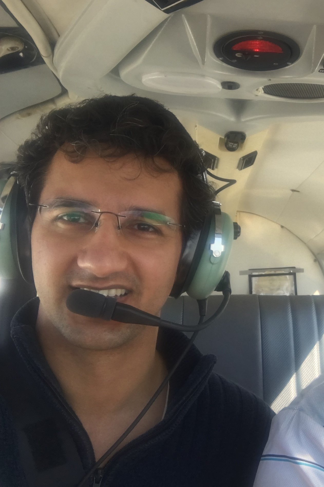

Hello, and welcome to my website.
I am an aerospace engineer, currently working for Universities Space Research Association (USRA) at the NASA Ames Research Center on the Urban Air Mobility (UAM) project. I do research on defining operational concepts and developing basic algorithms to provide autonomous Air Traffic Management (ATM) services to all types of airspace users.
I work on design and optimization of complex engineered systems and systems-of-systems. This includes using modeling and simulation techinques, especially tools such as network science, agent-based modeling, etc. In my past work, I have studied the effects of decision-making of autonomous agents on system-level performance, and development of heuristics for complex systems design.
Specific areas of applications of the above work in include air transportation systems and aircraft conceptual design. For air transportation research, I worked on a project on assessment of new aircraft technologies and their utilization on aviation’s environmental impact, followed by a study to investigate airline decisions on selection of their route network structure. My work on aircraft design included conceptual design and sizing of a regional transport aircraft and the design and sizing of an unmanned aerial vehicle for high altitude surveillance.
You can find me on LinkedIn, Github, and my publications at Scholar; you can see the list of my publications here.